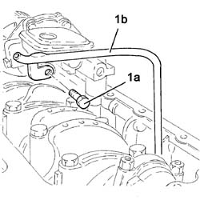
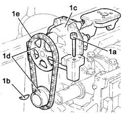
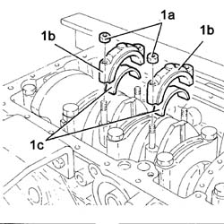
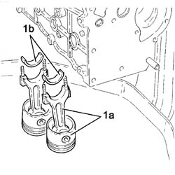
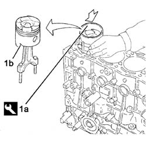
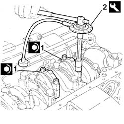
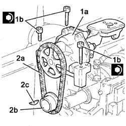
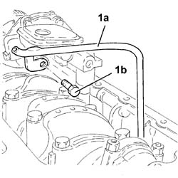
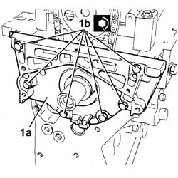
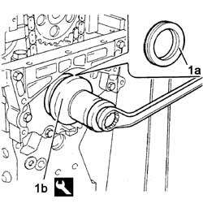

1028H14 PISTON CONNECTING ROD SET - R.R. WITH ENGINE AND CYLINDER HEAD(S) REMOVED
- Path
- Procedures > 10 ENGINE > 1028 PISTONS AND CONNECTING RODS > 1028H PISTONS AND CONNECTING RODS > 1028H14 PISTON CONNECTING ROD SET - R.R. WITH ENGINE AND CYLINDER HEAD(S) REMOVED
- Kind
- repair procedure (removal / refitting; the operation number is the code)
- Applies to
- engines: 3.0 24V V6, 2.0 16V JTD; all production periods
- Interactive page
- https://sloeber94.github.io/elrnDB-fUlss/en/#/179006921
Applies to: engines: 3.0 24V V6; all production periods
- Operation not available.
Applies to: engines: 2.0 16V JTD; all production periods
 Removing
Removing
 Refitting
RefittingOp. 1004D40 ENGINE - POSITION ON STAND AND REMOVE
1. Remove the timing belt toothed drive pulley (1a) and the key (1b).
2. Undo the fixing bolt (2a) and remove the crankshaft oil seal frontn cover (2b).

Applies to: engines: 2.0 16V JTD; all production periods
1. Undo the fixing bolts (1a) and remove the inner part of the guide (1b) for the engine oil dipstick.
Applies to: engines: 2.0 16V JTD; all production periods
1. Undo the fixing bolts (1a) and key the key (1b) and remove the engine oil pump (1c) complete with gears (1d) and chain (1e).

Applies to: engines: 2.0 16V JTD; all production periods
1. Position the tool for allowing the rotation of the crankshaft and secure it using the service bolts.
Description | Code | Function | |
|---|---|---|---|
1 | Flange | 1.860.815.000 | Crankshaft rotation |

Applies to: engines: 2.0 16V JTD; all production periods
1. Undo and remove the connecting rod caps (1a) and the half-bearings (1c), following the procedure described below:
- Rotate the crankshaft using the tool fitted previously until cylinders nos. 1 and 4 are at T.D.C.
- Undo the nuts (1a) and remove the connecting rod cap (1b) and the lower half-bearings for cylinders 1 and 4.
Applies to: engines: 2.0 16V JTD; all production periods
1. Remove the connecting rod-piston assemblies (1a) and the upper half bearings (1b) (crankcase side) for cylinders 1 and 4.

Applies to: engines: 2.0 16V JTD; all production periods
- Proceed in the same way for the removal of the pistons and the connecting rods for cylinders 2 and 3.
Applies to: engines: 2.0 16V JTD; all production periods
Refitting
Removing1. Fit the tool (1a) for compressing the piston rings on the piston and the subsequent fitting in the corresponding cylinder liner/bore, taking care to let the piston project at the bottom.
- Lubricate the cylinder liner/bore.
- Rotate the crankshaft.
- Fit the piston/connecting rod assembly (1b), complete with half-bearing, positioning it with the bevel on the pinion facing the oil filter side.
- Fit the projecting part in the cylinder liner/bore.
- Keeping the tool adhering to the cylinder block/crankcase, tap the piston crown using a suitable size drift until it slips down into the cylinder liner/bore.
Description | Code | Function | |
|---|---|---|---|
1a | Fitting tool | 1.860.700.000 | Introduction of connecting rod-piston assemblies in cylinder liners/bore |

Applies to: engines: 2.0 16V JTD; all production periods
- Rotate the engine on the overhaul stand.
1. Fit the connecting rod caps (1a) complete with half-bearings and secure by tightening the nuts to the specified torque and then complete the tightening using the angular tightening tool (1b).
Value daNm | Fastening | Component | dia | |
|---|---|---|---|---|
1a | 2 + 70° | Nut | CONNECTING ROD CAPS | - |
Description | Code | Function | |
|---|---|---|---|
1b | Torque wrench | 1.895.897.000 | Angular tightening of bearing cap nuts |

Applies to: engines: 2.0 16V JTD; all production periods
- Remove the tool for rotating the crankshaft.
Description | Code | Function | |
|---|---|---|---|
Flange | 1.860.815.000 | Crankshaft rotation |
1. Fit the engine oil pump (1a) and screw in the fixing bolts (1b) tightening them to the recommended torque.
Value daNm | Fastening | Component | dia | |
|---|---|---|---|---|
1b | (-) | Bolts | ENGINE OIL PUMP - R.R. with crankcase sump removed | - |
2. Fit the drive chain (2a), the drive gear (2b) and the key (2c).

Applies to: engines: 2.0 16V JTD; all production periods
1. Position the inner part of the guide (1a) for the engine oil dipstick and tighten the fixing bolts (1b).

Applies to: engines: 2.0 16V JTD; all production periods
- Remove the crankshaft front cover oil seal, the oil seal is destroyed by this removal operation but take care not to damage the oil seal housing.
1. Apply a bead of plastic sealant to the contact surface of the crankshaft oil seal front cover (1a), position it correctly and tighten the fixing bolts (1b) by pre-tightening and then tightening to the recommended torque.
Value daNm | Fastening | Component | dia | |
|---|---|---|---|---|
1b | 0.7 | Bolt pre-tightening | FRONT OIL SEAL FRONT COVER | - |
Value daNm | Fastening | Component | dia | |
|---|---|---|---|---|
1.5 | Botl tightening | FRONT OIL SEAL FRONT COVER | - |

Applies to: engines: 2.0 16V JTD; all production periods
Description | Code | Function | |
|---|---|---|---|
1b | Fitting tool | 1.860.855.000 | Fit the crankshaft front cover oil seal |

Applies to: engines: 2.0 16V JTD; all production periods
Topics linked from this page (2)
- 1004E10 ENGINE, REMOVED - REMOVE CYLINDER HEAD AND OIL SUMP FOR INSPECTION - INCLUDES POSITIONING ON STAND AND REMOVAL
- 1004D40 ENGINE - POSITION ON STAND AND REMOVE